Music Vault
Music you can listen to
Tracks made with AI music models, then chosen and curated by NMAI Research. Press play on any track: the video loads from YouTube only when you do.
Same brief, two models
Two pairs of selected takes, each made by two models: Wrong Turn, Right Place from the same submitted lyrics and style brief, and Distance in the Breaks from the same concept and hook lines. Playback levels are matched for comparison.


More tracks
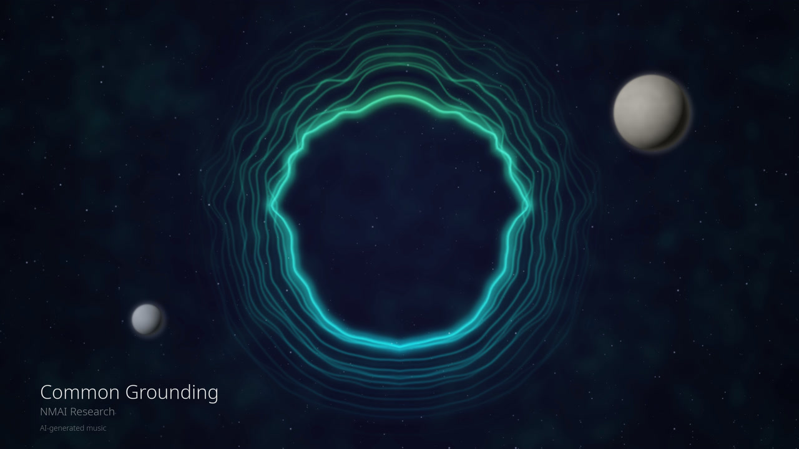
Play Common Grounding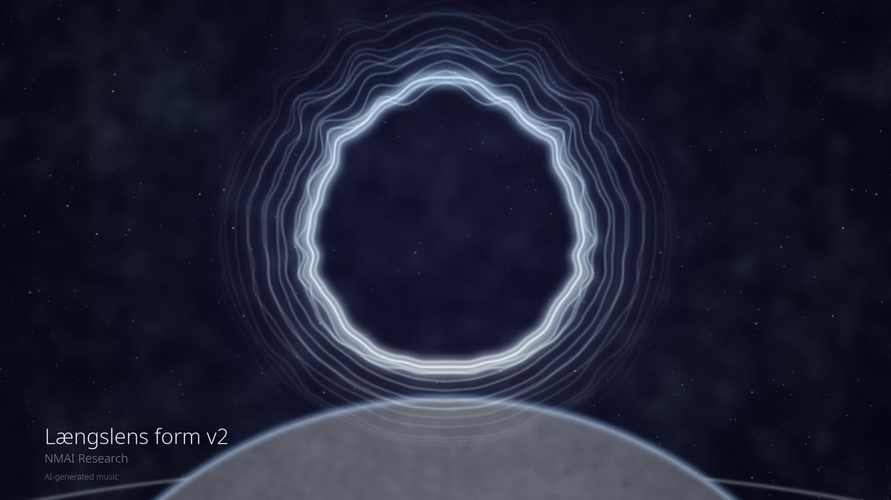
Play Længslens form v2 Play The Lift Is Out Again
Play The Lift Is Out Again
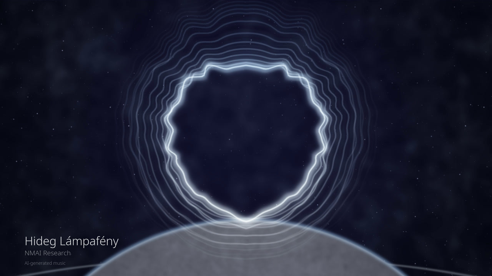
Play Hideg Lámpafény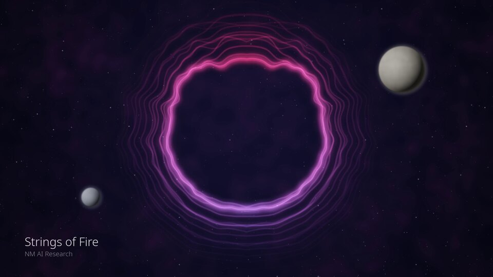
Play Strings of Fire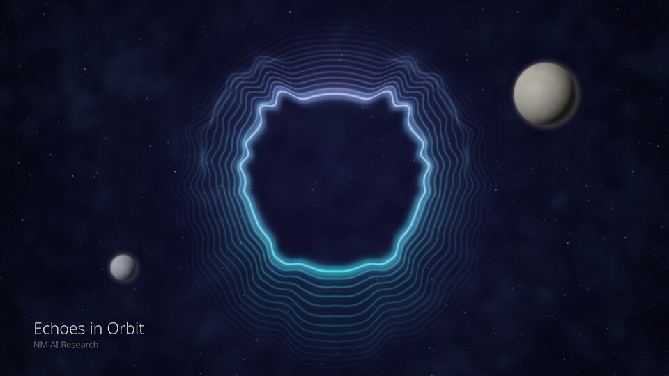
Play Echoes in Orbit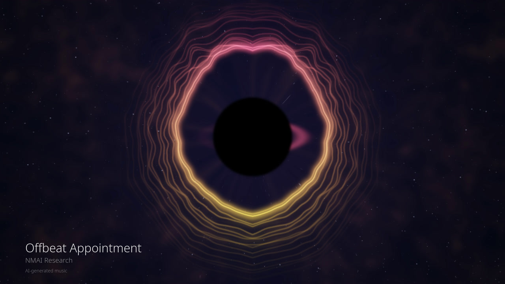
Play Offbeat Appointment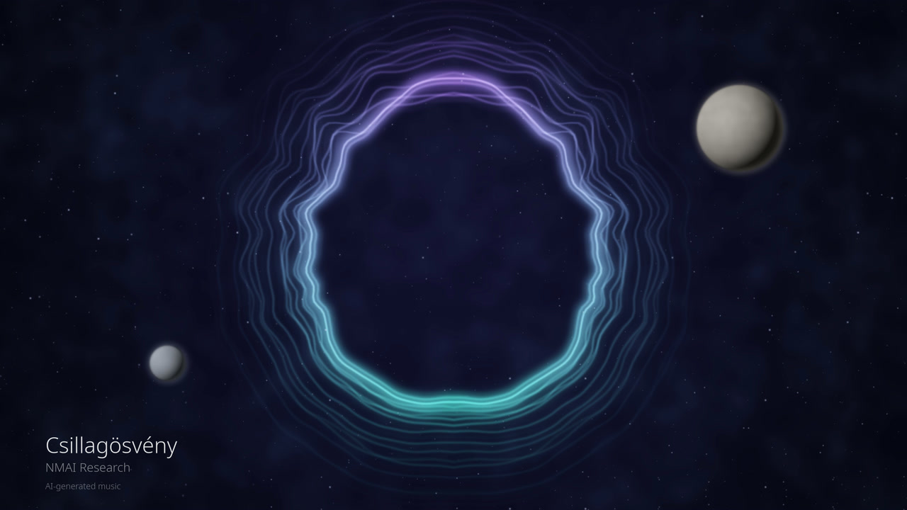
Play Csillagösvény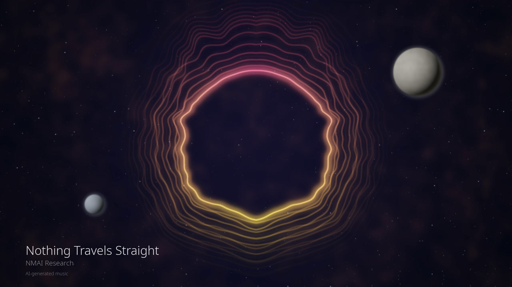
Play Nothing Travels Straight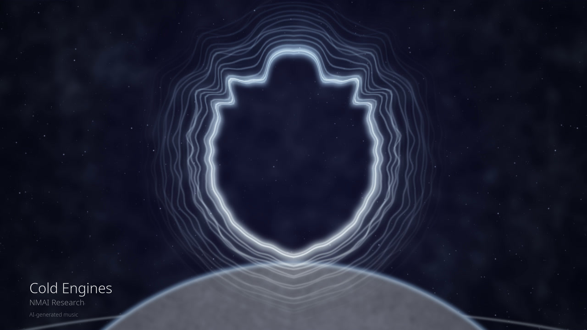
Play Cold Engines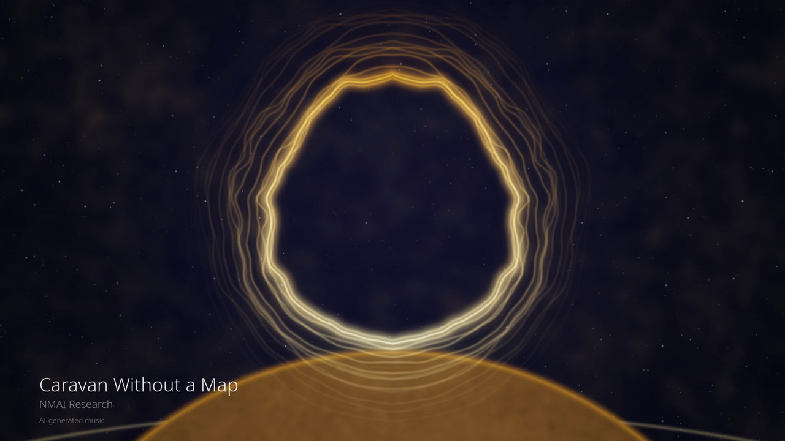
Play Caravan Without a Map Play Second-Step Conversation
Play Second-Step Conversation
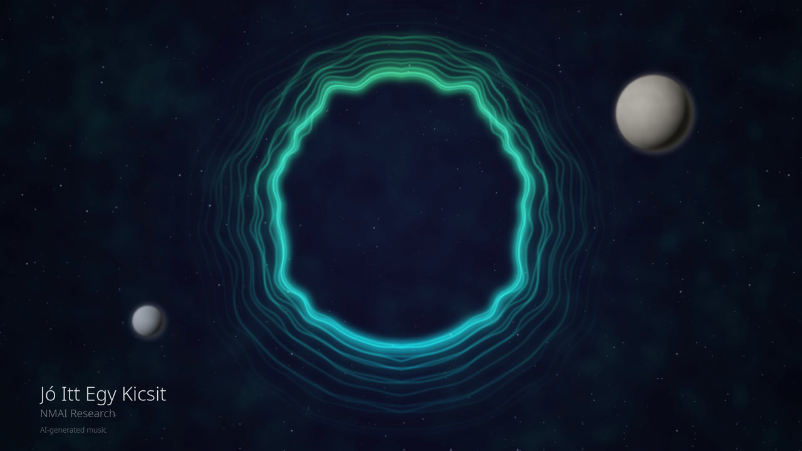
Play Jó Itt Egy Kicsit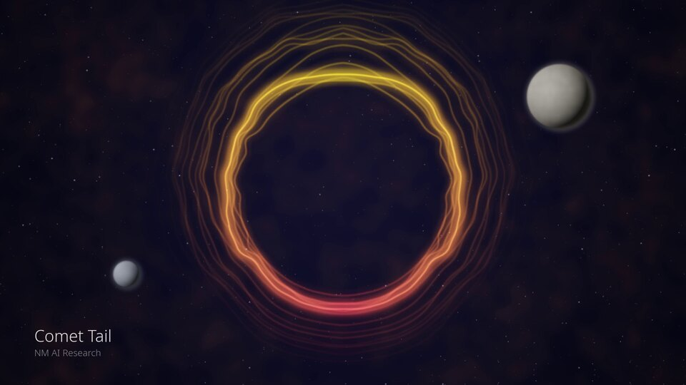
Play Comet Tail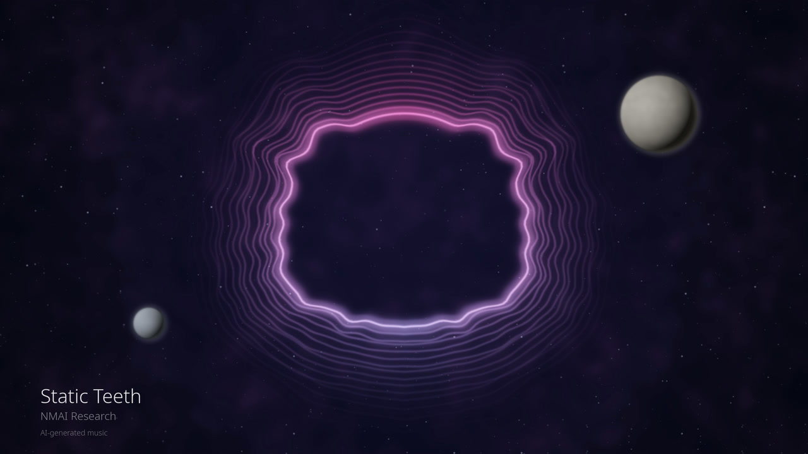
Play Static Teeth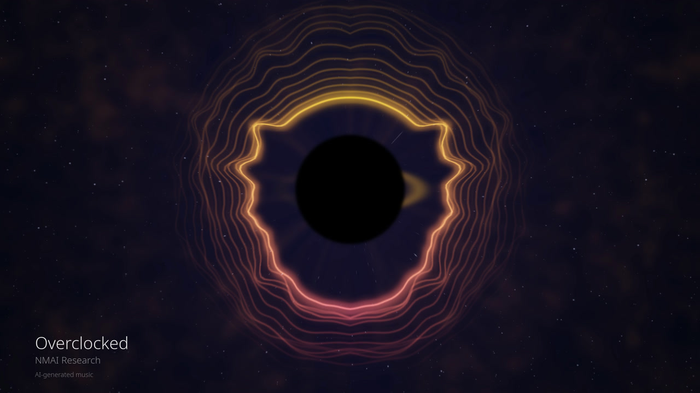
Play Overclocked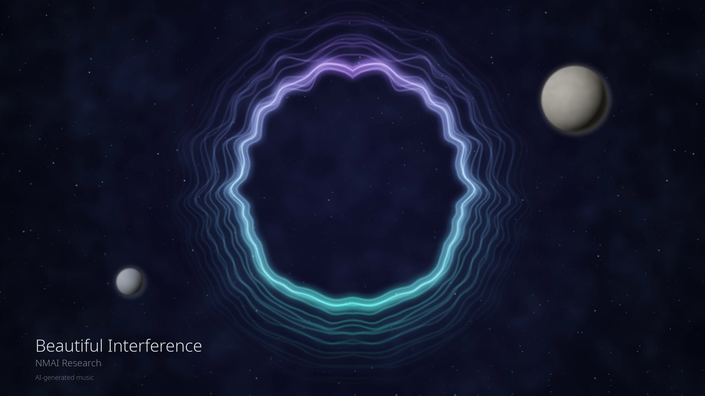
Play Beautiful Interference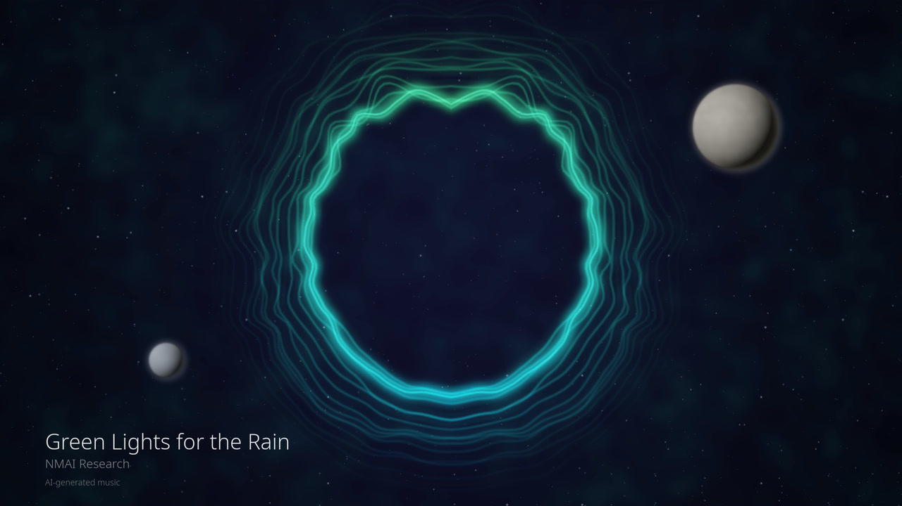
Play Green Lights for the Rain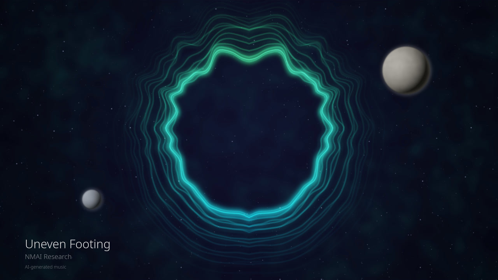
Play Uneven Footing Play Ballast
Play Ballast
More tracks are on the NMAI Research YouTube channel.
Credits and licences
Music generated with YuE2-3B (run locally) and Suno v6-mini, standard v6 Pro and v6; selected and curated by NMAI Research. Assisted by Opus 5.5 (Claude Code CLI), GPT-6 Astra (Codex CLI) and GPT-6.1 Sol (Codex CLI). Generation terms: YuE2 model licence and Suno terms.
Licences and terms
YuE2's individual creator permission allows publication and monetisation of generated music, subject to its conditions. The model weights' CC BY-NC 4.0 licence does not automatically apply to these recordings.
Wrong Turn, Right Place (Suno v6-mini), Hangsúlyváltás, بين ضفتين, Beautiful Interference, Csillagösvény, 星纹, Caravan Without a Map, Længslens form v2, Pressure in the Balcony, Iron in the Air, Borrowed Momentum, Cold Engines, Ballast, Static Teeth, Distance in the Breaks (Suno v6 Pro), Stop, Nothing Travels Straight, Loose Connections, Pocket Change Philosophy, Offbeat Appointment, Orchestra in My Pocket, Uneven Footing, Acid Etiquette, Second-Step Conversation and Syncopation Service were downloaded through Suno's paid route, with commercial-use permission under Suno's terms. That permission does not guarantee copyright protection.
Music recordings: CC BY-NC 4.0, covering rights held by NMAI Research. You may share and remix for non-commercial use with credit and an indication of changes. Commercial reuse requires separate permission from NMAI Research.